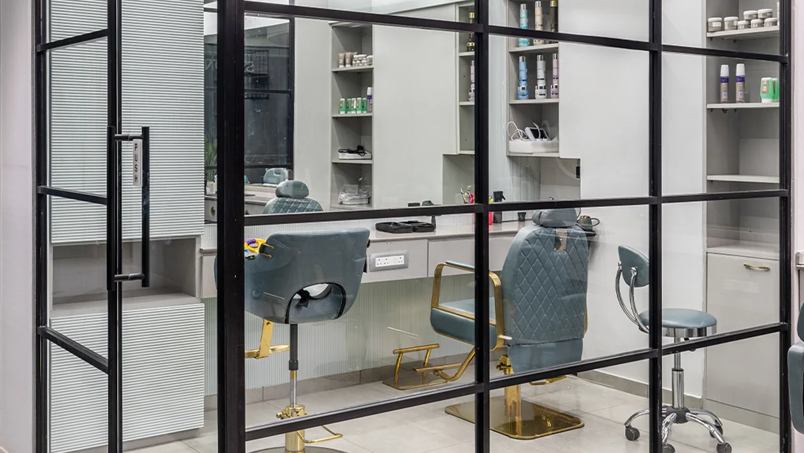

Nail art is a simple way to express your personal style while complementing your outfit, mood, and occasion. From minimal nude designs to detailed bridal nail art, there are several styles to explore depending on your preferences and nail shape. If you are looking for nail art designs in Vadodara, choosing the right design involves considering the event, outfit colours, nail length, and the level of detailing you prefer.
The best nail art design is one that complements your overall look while remaining comfortable and practical for the occasion. Whether you need everyday nail art, festive designs, or something elegant for a wedding, understanding different styles can help you make the right choice.
Nail art involves decorating natural or enhanced nails using colours, patterns, textures, and decorative elements. Designs can range from simple colour combinations to detailed artistic patterns.
Some popular nail art styles include:
Your nail art should complement the setting and overall appearance of your outfit. Here are some popular options for different occasions.
For everyday wear, simple and low-maintenance designs are often practical choices. Minimal nail art can look polished without appearing too decorative.
Consider these options:
These styles work well for everyday activities, office settings, and casual outings.
Professional settings often call for clean and understated nail designs. Neutral colours and minimal patterns can complement formal clothing without drawing too much attention.
Popular choices include:
Short or medium-length nails with simple detailing can be particularly convenient for daily professional activities.
Parties and evening events provide more opportunities to experiment with bold colours, reflective finishes, and creative patterns.
Some suitable designs include:
You can also coordinate your nail colour with accessories, footwear, or statement elements in your outfit.
Bridal nail art often focuses on elegant details that complement wedding outfits and jewellery.
Popular bridal nail designs include:
When selecting bridal nail art, consider your outfit colour, jewellery, wedding theme, and the level of detailing you prefer.
Festivals offer an opportunity to experiment with vibrant colours and decorative nail designs.
Consider options such as:
Choose colours that complement your festive outfits while maintaining a balanced overall appearance.
Your natural nail shape and length can influence how a particular design looks. Choosing suitable patterns and placements can help create a balanced finish.
Nail Shape
Recommended Nail Art
Overall Appearance
Square
French tips and geometric patterns
Clean and structured
Almond
Floral and minimal designs
Elegant and elongated
Oval
Nude shades and delicate patterns
Soft and classic
Coffin
Chrome, glitter and abstract designs
Bold and modern
Round
Minimal dots and pastel colours
Simple and understated
Stiletto
3D embellishments and statement patterns
Dramatic and creative
You do not need extensions to enjoy nail art. Many designs can also be customised for natural nails.
Coordinating your nail design with your outfit can create a more cohesive appearance, particularly for weddings, celebrations, and formal events.
Consider these styling suggestions:
Instead of matching your nail colour exactly to your outfit, you can also choose complementary shades for a more coordinated appearance.
Choosing a nail art service involves more than selecting a design from a reference photograph. The application technique, product quality, nail preparation, and hygiene practices also matter.
Before booking an appointment, consider these factors:
A proper consultation can help you select a design that suits your occasion, preferences, and nail condition.
Finding the right salon for nail art involves considering design customisation, application quality, product selection, and hygiene practices.
Frenyz Salon in Vadodara offers a dedicated Nail & Tattoo service category as part of its beauty services. Clients interested in nail styling can explore the available options and discuss their preferred designs during a consultation.
Whether you prefer minimal everyday nail art, elegant bridal-inspired designs, or creative statement styles, sharing your reference photographs and expectations can help establish the desired look.
Before booking, confirm the availability of your preferred nail art design, application method, and any additional charges for decorative elements or extensions.
You can explore the official Frenyz Salon website for information about its services.
Choosing the right nail art design depends on your occasion, outfit, nail shape, and personal style. Minimal designs are suitable for everyday wear, while glitter, chrome, floral patterns, and decorative embellishments offer more options for parties, weddings, and festive celebrations.
Before booking nail art services in Vadodara, consider the artist's work, hygiene practices, product selection, and maintenance requirements. A customised design that complements your preferences can help create a polished appearance for any occasion.
Minimalist nail art, nude shades, soft pink colours, French tips, and subtle geometric patterns are popular choices for everyday wear. These designs offer a clean appearance without excessive detailing.
The longevity depends on the application method, products, nail preparation, and daily activities. Regular nail polish may require more frequent refreshing, while gel-based designs generally last longer when properly applied and maintained. Follow your nail technician's aftercare instructions.
Yes, many nail art designs work beautifully on short natural nails. Minimal patterns, French tips, small floral details, pastel shades, and geometric accents can create an attractive finish without requiring nail extensions.